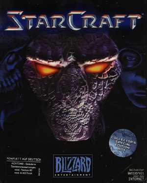

《스타크래프트》(영어: StarCraft)는 블리자드 엔터테인먼트에서 제작한 실시간 전략 게임이다. 
1998년 3월 31일 북미와 중국에, 4월 9일에는 대한민국에 발매되었다. 게임의 배경은 26세기 초반의 미래의 우주로, 지구 집정 연합에게 버림받은 범죄자들의 테란(Terran)과 집단 의식을 가지고 다른 종족을 흡수해 자신들의 것으로 만드는 저그(Zerg), 초능력과 과학 기술이 고도로 발달한 외계 종족인 프로토스(Protoss) 사이의 전쟁을 다루고 있다. 후속작으로 스타크래프트: 리마스터와 스타크래프트 2가 있다.